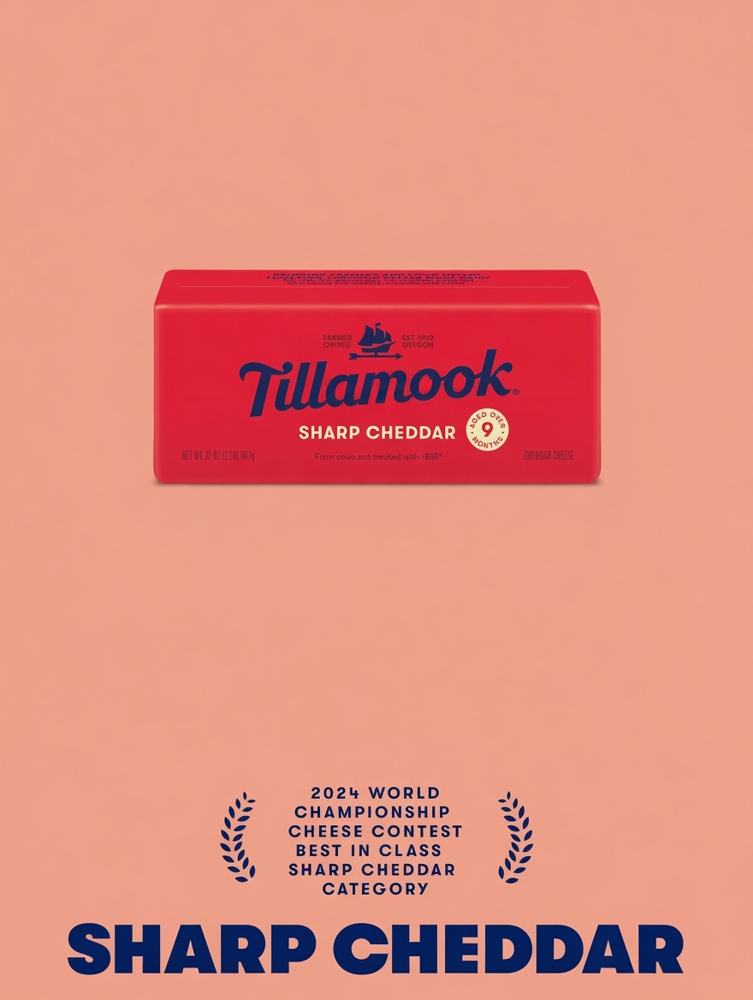
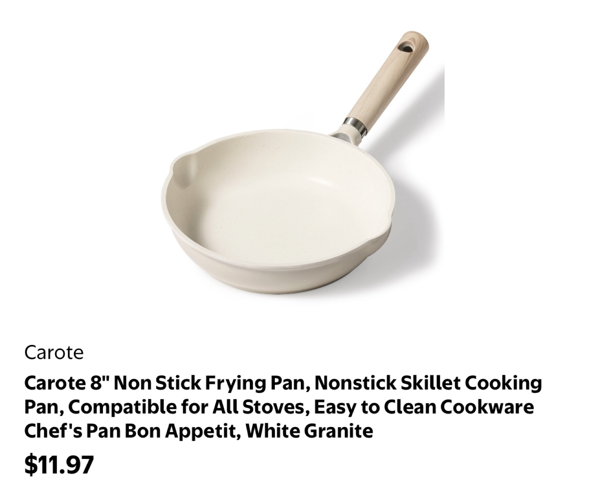
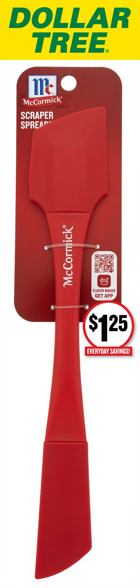
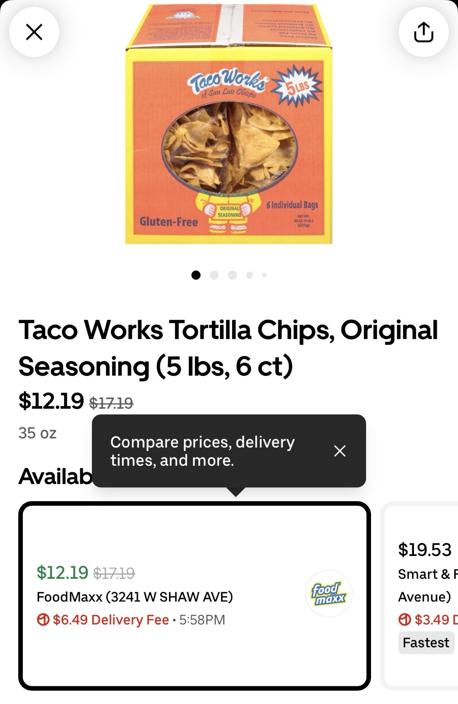
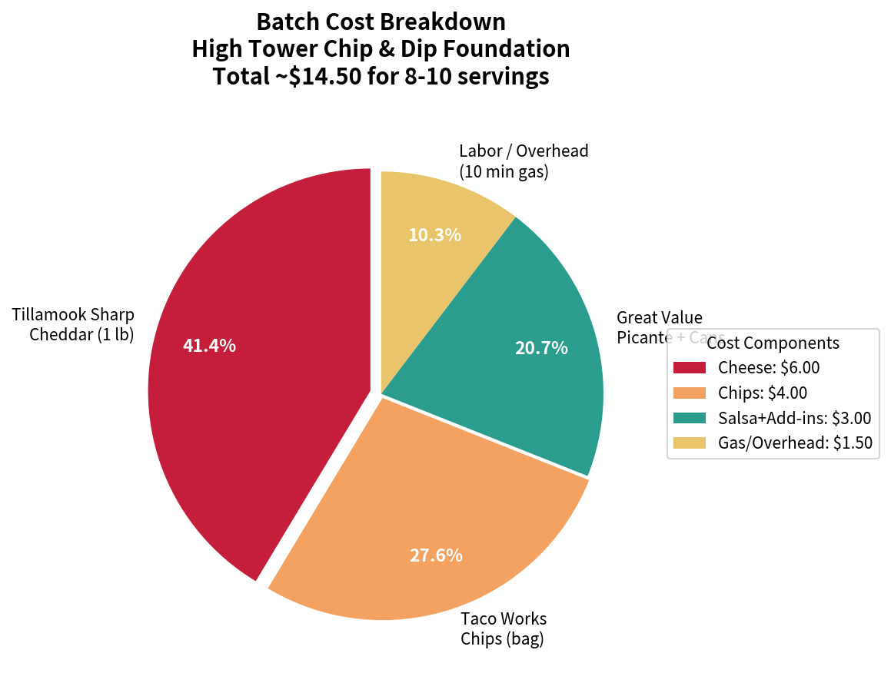
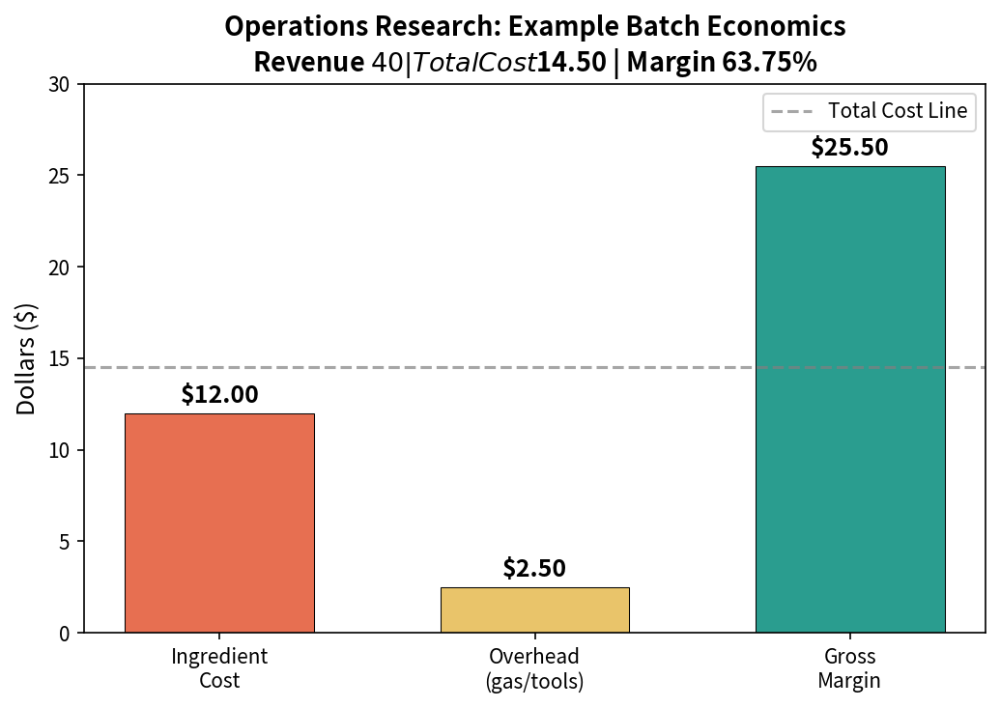

Tillamook Sharp Cheddar + Taco Works chips — the DNA foundation. Now augmented with the $12.19 FoodMaxx bulk deal, value math, Great Value cans, and green chile New Mexico-style twists.
Research confirmed it. The best cheese for a serious dip is Tillamook Sharp Cheddar — aged over 9 months, farmer-owned since 1909, and a 2024 World Championship Cheese Contest Best in Class winner in the Sharp Cheddar category. That block is one half of the helix. The other half is Taco Works chips, made in San Luis Obispo since the late 1970s. Get those two strands locked in and the toppings become infinite — just like pizza. The sequence is yours to define.
This is not a street-food pitch. It is the formula that fell out of a personal challenge: how do you monetize high-quality, low-overhead craft cooking with nothing more than a properly tuned gas burner, a $10 nonstick pan, and ingredients you can grab at Walmart or the neighborhood market? The answer lives in the High Tower District.
Augmented Edition note: Fresh local shopping intel (the $12.19 FoodMaxx 5 lb box) and green chile variations have been integrated below, expanding the practical reach and regional flavor depth of the original helix without altering its core.
One strand: the 2 lb block of Tillamook Sharp Cheddar. Net weight 32 oz. From cows not treated with rBST. Available in California for $10.95 on a good day at the local market, or $12.50 every single day at Walmart. Walmart used to flip between $10 and $15; for the last three months they have settled on the average. Rules change — that is the only constant.
The other strand: Taco Works tortilla chips, manufactured in San Luis Obispo. Local Central Coast staple since Ty Bayly started making them in his restaurant and then built a factory. The texture and seasoning hold up under a heavy, hot dip without turning to mush. That is the chip half of the DNA.
The connection between the strands is the salsa. Great Value Medium Picante Sauce (70 oz jug, $5.98, 8.5 ¢/oz) is the least expensive option that does not destroy the dip with excess water. You can make your own, but this one pays for the disposable container and keeps the margin clean. Mix a measured amount into the melting cheese — that is the base-pair bond.

Simply having a gas burner that is tuned properly on low for 10 minutes or less, along with the $10 nonstick pan from Ross — and there is no loss at Ross — is the entire production line. The pan in question is the Carote 8" nonstick (white granite finish). At Walmart it sits around $11.97–$12; at Ross it is $10. Key detail: look for the color and the absence of bolts near the handle attachment. Fewer crevices mean easier cleaning and longer life under repeated low-heat cycles.
The spatula is half of a $13.02 McCormick set at Walmart. At Dollar Tree it is $1.25. Same tool. That is the real-time arbitrage that keeps overhead near zero.
Heat source cannot be compromised. Propane outdoors or the house gas burner both work — as long as the flame is even and the heat stays low. High heat at the start followed by constant stirring can cut time, but the moment it starts bubbling you back it off. Simmer gives the most even, consistent melt. Grating the cheese is optional and speeds the process; leaving it in chunks is fine if you are patient. Texture of the finished cheese tells you everything. There is no single “wrong” way, only degrees of evenness.


You can expect to pay around $20 for this 5 lb box of Taco Works Tortilla Chips in many places — but if you shop around in Fresno, you can find a real deal like this one. Here in the Tower District, Smart & Final has them for $16.99 (the only place I've regularly seen them), but the FoodMaxx advertisement shows them as low as $12.19 (down from $17.19).
This bulk box is the key that makes the entire High Tower Dip recipe not just delicious, but genuinely affordable and scalable. One bag alone can cost substantially more per ounce. Buying the six-bag 5 lb box gives you serious value — and opens the door to creative variations with green chiles that take the flavor profile from classic to New Mexico Southwest style.
The appearance of this box in the app is exciting because a single bag is going to cost you substantially more. A single bag might get you up to about 1 pound of chips, but when you buy the six-bag 5 lb box, each individual bag is roughly 5/6 of a pound (about 13.3 oz). In the current market, a premium above $3 per bag starts to feel unreasonable — especially when the bulk deal drops it to around $2.03 per bag.

Let's break it down clearly. The 5 lb box contains six individual bags totaling 80 oz. That's a serious amount of chips for the helix base. The bulk box is the move. It keeps the per-serving cost of the chip half of the helix well under control while giving you inventory for multiple rounds of the dip — or to share with neighbors in the District.
| Option | Total Price | Per Bag | Value Verdict |
|---|---|---|---|
| FoodMaxx Bulk Deal | $12.19 | ~$2.03 | Best deal |
| Smart & Final | $16.99 | ~$2.83 | Solid local option |
| Typical Single Bag | $3.50–$4.50+ | $3.50–$4.50+ | Premium pricing |
Prices observed July 2026 in Fresno area. Bulk saves 30–50%+ per bag compared to singles. The 5 lb box makes the full helix recipe (multiple batches) very economical.
The cost of a can of Southwest corn or black beans with the Great Value brand is under one dollar. Premium brands are typically more than two dollars, but I've tried both the premium and the Great Value versions specifically in the Southwest corn as well as the black bean variety — and they hold up plenty well to any name brand in the context of this recipe. No need to overpay for the add-ins. The helix stays strong with smart, affordable choices that don't sacrifice flavor or texture when mixed into the melted Tillamook Sharp Cheddar base.
Furthermore, I've learned that the small cans of green chiles can supplement a single serving. I measure a single serving as about 1 inch off the Tillamook block along with an equal weight portion of the Great Value salsa from Walmart that's already part of the core story.
A small portion of green chiles can supplement the Walmart salsa beautifully. But in addition to that, a larger portion — for example, a full can of green chiles replaced for the Great Value salsa — creates a Southwest New Mexico style flavor that can be a real hit if you're familiar with what's popular in Albuquerque, New Mexico and other areas that enjoy their green chile peppers.
This can enable you to combine it instead of (or alongside) the classic Taco Works chips. You might want to combine it with some other kind of Southwest base for variety — perhaps some kind of Taos-friendly wheat-thin style cracker for a fun, lighter twist. The possibilities open up once the core helix is affordable thanks to the bulk deal.
Sample batch sized for 8–10 generous servings (one full pan of dip + one bag of chips):
Total cost ≈ $14.50 (even lower with the $12.19 bulk box — closer to $12–13 per batch)
If the batch is valued or moved at $40 (content sponsorship, private event, challenge prize, or simple neighborhood order), the gross margin is:
($40 − $14.50) / $40 = 63.75%
Overhead is almost entirely the ten minutes of attention and the gas. Tools are sunk or near-zero after the first use. That is the operations-research core: maximize the quality-to-cost ratio while keeping the process mobile and low-commitment. No storefront, no inventory risk beyond one block of cheese and a few cans. The new bulk deal and green chile options only improve these numbers and expand the flavor menu.


This formula was built inside the District — 93728, the same blocks where the gas burner, the Ross run, the Dollar Tree score, the FoodMaxx $12.19 box run, and the local-market cheese hunt all happen. It is practical knowledge, not theory. The challenge was personal: create something high-quality that can be repeated, documented, and monetized without turning into a full food-service operation. The helix (now with bulk economics and green chile options) is the answer that stuck — and keeps evolving with real District shopping intel.
This augmented story is the written companion to the real-world video. Scroll it while the burner is on low. Grab the bulk box when you see it, stock the Great Value cans, and try the green chile twist. The helix (and its NM cousin) is ready whenever you are.
This augmentation reflects the living, real-time nature of the High Tower District story itself. The original helix concept — Tillamook Sharp Cheddar meeting Taco Works chips via Great Value salsa, executed on a tuned low gas burner with minimal tools — was already a powerful, personal formula born from a challenge to monetize quality craft without overhead.
Adding the $12.19 FoodMaxx bulk deal transforms the economics from “occasional treat” to “repeatable staple,” dropping per-batch chip costs dramatically and making the recipe scalable for sharing or multiple servings. The Great Value can validations (Southwest corn, black beans, and especially the green chiles) reinforce that smart, affordable choices hold their own against premium brands in this context — preserving margin while boosting flavor.
The green chile twists — from simple supplement to full salsa replacement for authentic New Mexico/Albuquerque-style depth — add cultural and regional layers that resonate with Southwest palates right here in Fresno. It turns the helix from a fixed DNA into a flexible platform: classic, mild-heat lift, or bold roasted green chile profile. The nod to lighter Taos-style bases (wheat-thins) even hints at playful variations for different moods or lighter bites.
In short, the augmentation makes the story more practical, more affordable, more flavorful, and more community-oriented. It shows how local shopping discoveries (the box deal) and recipe experimentation (green chiles) naturally evolve a personal project into something richer and more shareable — exactly the spirit of the High Tower District archive. The core helix remains intact; the new elements simply make it stronger, more accessible, and more fun to iterate on in real District kitchens.